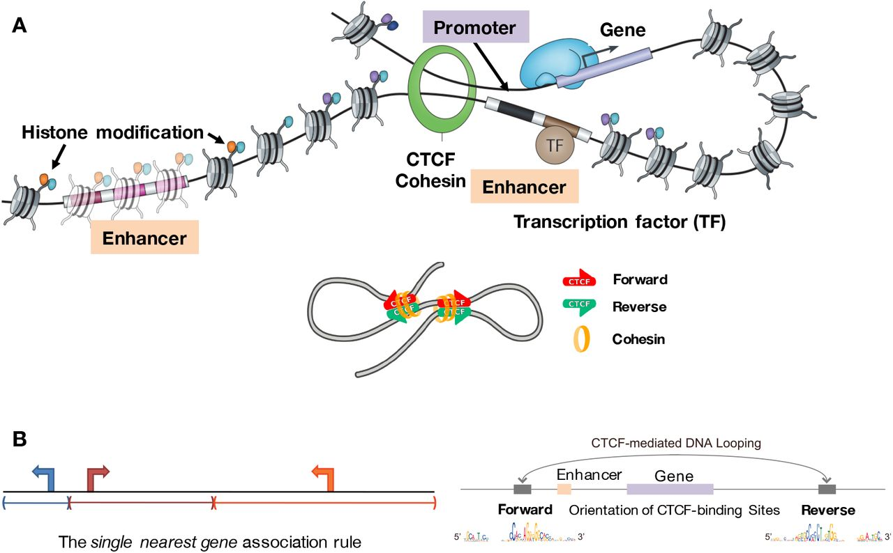

BSMS205 · Genetics
Gene Regulation
Chapter 28 · How Cells Read the Same Book Differently
Today's central question
Same DNA. Same library.
Why do different cells
read different chapters?
The central dogma · revisited
- DNA → RNA → protein
- Multiple control points at every step
- Transcriptional regulation is the most fundamental
- If a gene isn't transcribed, nothing downstream matters
Roadmap
- Promoters · the local on-ramp
- Pre-initiation complex and pause-release
- Enhancers · long-range control
- Combinatorial logic and cell-type specificity
- 3D chromatin looping · CTCF and cohesin
- TADs and enhancer hijacking
- The IGF2 / H19 case study
§ 1
Promoters
What a promoter is
- DNA region immediately upstream of a gene
- Where RNA polymerase II assembles to begin transcription
- Contains short binding motifs · TATA box · Inr · CpG island
- The on-ramp to the gene
Common promoter elements
| Element | Position | Role |
|---|
| TATA box | ~30 bp upstream | Recruits TBP · classic but not universal |
| Initiator | Overlaps TSS | Positions Pol II in TATA-less promoters |
| CpG island | ±200 bp around TSS | Marks housekeeping genes |
Building the pre-initiation complex
- TFIID (with TBP) binds the TATA box
- TFIIB joins · then RNA Pol II + TFIIF
- TFIIE and TFIIH arrive · TFIIH unwinds DNA
- Pol II begins transcription
Promoter-proximal pausing
- After ~20–60 bp, Pol II pauses
- Like a runner waiting in the starting blocks
- Released by P-TEFb phosphorylation of Pol II CTD
- Enables fast activation in response to signals
§ 2
Enhancers ·
Long-Range Control
What an enhancer is
- Short DNA element · 50 – 1500 bp
- Binding platform for multiple transcription factors
- Recruits coactivators (Mediator, p300/CBP)
- Loops through 3D space to contact a promoter
Distance independence
- Can be 1 megabase from the gene
- Upstream · downstream · or in an intron
- Works in either orientation
- Example: SHH gene · ZRS enhancer >1 Mb away
Combinatorial logic
Multiple TFs must bind together for an enhancer to fire.
- Muscle enhancer: MYOD + MEF2 + SRF
- Neuron enhancer: NEUROD + REST + SOX
- Active only in cells with the right TF combination
Histone marks identify active enhancers
| Mark | Meaning |
|---|
| H3K4me1 | Marks all enhancers (active and poised) |
| H3K27ac | Marks active enhancers |
| eRNA | Short bidirectional transcripts at active enhancers |
Rapid evolution · functional conservation
- Enhancer sequences evolve faster than coding regions
- Human-mouse enhancer similarity: ~50–60% (vs 85–90% for coding)
- But essential developmental enhancers are deeply conserved
- Species differences (e.g. human brain) emerge from enhancer changes
§ 3
3D Chromatin Looping
The cast of characters
- CTCF · DNA-binding protein · loop anchor · ~40 – 60K sites genome-wide
- Cohesin · ring-shaped complex · embraces DNA · extrudes loops
- Cohesin slides until stopped by CTCF
- Convergent CTCF orientation (><) → stable loop
The convergent orientation rule

Cohesin extrudes until stopped by convergent CTCF anchors → enhancer-promoter loop forms.
Osato 2019, bioRxiv. CC BY 4.0.
Topologically Associating Domains (TADs)
- Genomic neighbourhoods · 100 kb to a few Mb
- Enhancer–promoter contacts within the same TAD
- Boundaries: convergent CTCF sites
- Crossing TAD boundaries is rare
Enhancer hijacking · when boundaries break
- Chromosomal rearrangement disrupts a TAD boundary
- Strong enhancer ends up next to the wrong gene
- Classic example: T-cell leukaemia · TCR enhancer near MYC
- MYC overexpression drives the cancer
§ 4
Case Study ·
IGF2 / H19
The IGF2 / H19 setup
- Two genes near each other · share a distal enhancer
- Between them: a differentially methylated region (DMR)
- DMR can recruit CTCF — but only when unmethylated
- Genomic imprinting · which gene is on depends on parent of origin
Paternal allele · IGF2 ON
- DMR is methylated
- CTCF cannot bind · no insulator
- Enhancer loops to the IGF2 promoter
- IGF2 expressed · H19 silent
Maternal allele · H19 ON
- DMR is unmethylated
- CTCF binds · creates an insulator
- Insulator blocks the enhancer from reaching IGF2
- Enhancer loops to H19 instead · H19 expressed · IGF2 silent
The architecture in one figure
 Paternal: methylated DMR · enhancer reaches IGF2.
Paternal: methylated DMR · enhancer reaches IGF2.
Maternal: unmethylated DMR + CTCF · enhancer redirected to H19.
Merkenschlager & Odom 2013, Cell.
What to take away
- Cell identity = gene expression, not DNA sequence
- Promoters: local on-ramp · pre-initiation complex · pause-release
- Enhancers: long-range, combinatorial, cell-type specific
- 3D looping (CTCF + cohesin) brings them together
- TADs insulate · breaking them causes enhancer hijacking
- IGF2 / H19 — same DNA, opposite outcomes by 3D geometry
Next lecture
How do we measure
gene regulation in actual cells?
Chapter 29 · Gene Regulation — Methods and Applications